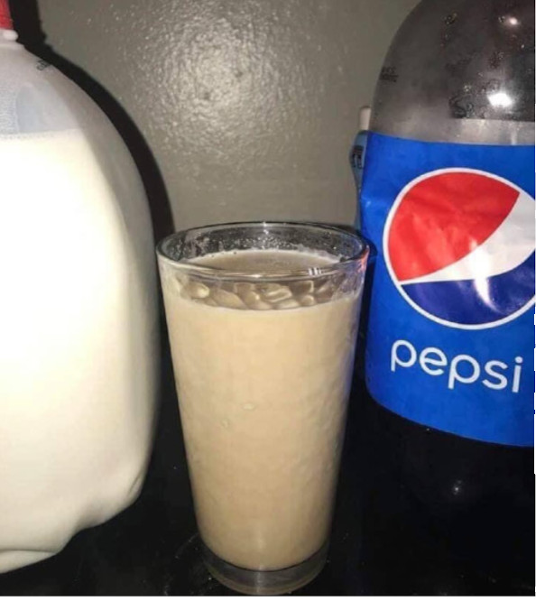

Pilk

A rare picture of the beverage of the gods
In this recipe we shall attempt to recreate this drink, while it may look fairly simple, the steps involved needs precise execution and the finest cuisine skills
Whatever happens, do not replace Pepsi with Coca Cola
Ingredients:
- Pepsi: 330ml
- Milk: 200ml
- Chocolate powder: one big spoon
Steps
- Grab a big glass, a can of pepsi and the milk
- Pour the milk first into the glass, very carefully
- Grab the chocolate powder in your closet or place of choice and fill a spoon with it
This next step need to be done as fast as possible, the quality of the drink will depend on it
- Pour the pepsi down the bottle and immediately empty the chocolate powder spoon in the glass. Do not stir
- Enjoy your pilk!!!!
Return to homepage